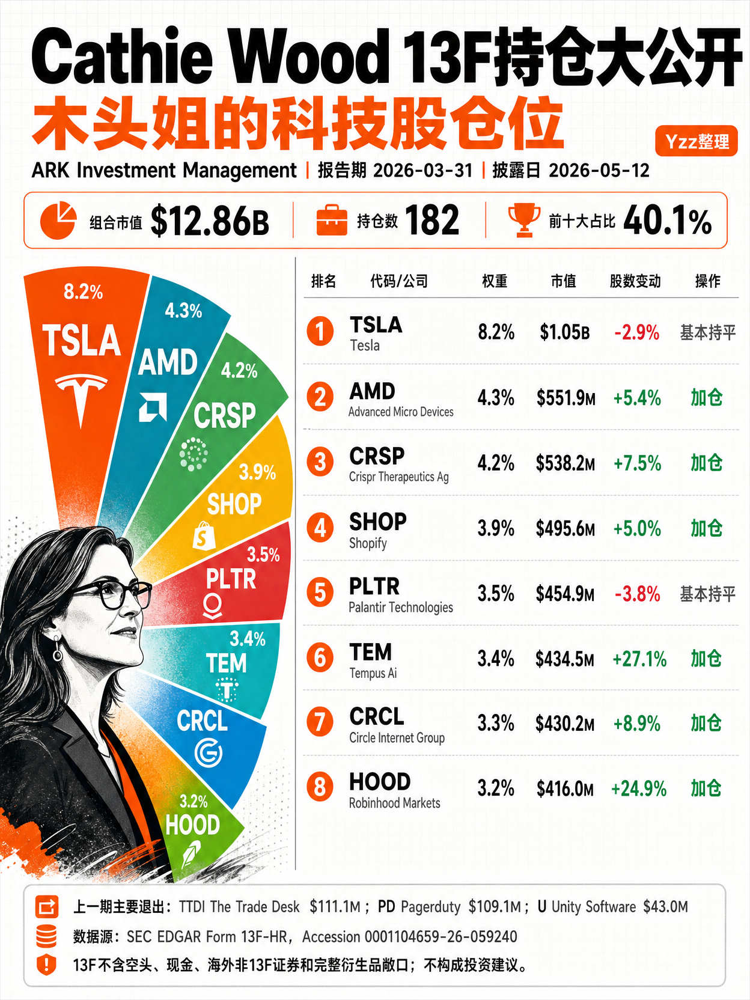

Q1 已披露
--
已验证经理
--
官方来源
SEC EDGAR
发布形态
数据 + 图卡
Holdings radar
基金经理 13F 持仓雷达
表格用于核验完整持仓，图卡用于社媒传播。这里先放可回查的数据版本。
Shareable card
表格负责准确，图卡负责传播。
网页保留完整数据、口径和 SEC 原始链接；图卡只提炼最适合转发的前十大持仓和重点变化。两者不是二选一，而是同一组数据的两个阅读层级。

ARK Daily
ARK 日更持仓和 13F 不是同一个口径
ETF 日终持仓更接近每日组合披露，13F 是季度末快照，两条线可以分开看。
Source & disclaimer
数据来源与必要声明
官方来源数据来自 SEC EDGAR 的 13F 信息表，详情面板保留原始 XML 链接，便于回查。
披露延迟13F 是季度末快照，通常在季度结束后 45 天内披露，不代表实时持仓。
覆盖范围13F 主要覆盖美国上市证券多头持仓，不完整覆盖空头、现金、海外证券和衍生品风险敞口。
非投资建议本页仅作公开信息整理和研究参考，不构成任何买卖建议或收益承诺。